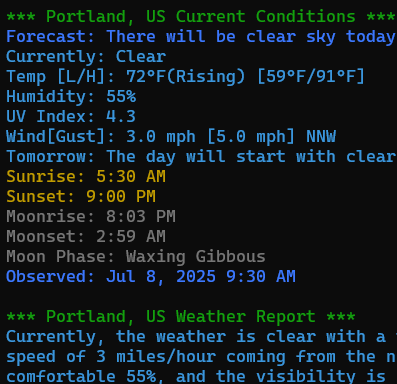

|  |
gwgw is a command-line application that retrieves and displays detailed weather information for a specified location using the OpenWeatherMap One Call API 3.0. It accepts US zip codes or "City, State" strings, and provides current conditions, daily forecasts, alerts, and more with smart color-coding for at-a-glance information. Available in a native Go version for cross-platform performance and a PowerShell version for Windows environments. DownloadsGO Edition: PC [ x86 / x64 ] Linux [ x86 / amd64 ] ↳ README PowerShell Edition: [ ps1 ] ↳ README |